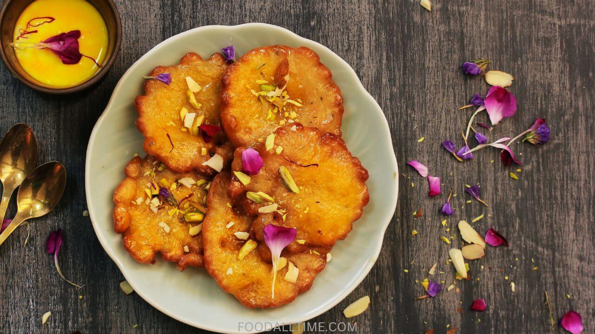

Jaggery malpua recipe

Jaggery Malpua Recipe: This is a Rajasthani recipe which is quite popular. To make this delicious malpua, all you need all-purpose flour, jaggery, ghee, cardmom and milk.
Ingredients of Jaggery Malpua
- -1 Cup all-purpose flour (maida)
- -1/2 cup jaggery (gur), grated or chopped
- -1/4 cup milk
- A pinch of cardamom powder (elaichi)
- A pinch of fennel seeds (saunf)
- Ghee (clarified butter) for frying
- Chopped nuts (like almonds and pistachios) for garnish
How to Make Jaggery Malpua
- In a mixing bowl, combine the all-purpose flour, jaggery, cardamom powder, and fennel seeds.
- Slowly add milk and whisk until you have a smooth, lump-free batter. It should be thick enough to coat the back of a spoon.
- Pour a ladleful of the batter into the hot ghee. Using the back of the ladle, spread it into a small, round pancake.
- Cook the Malpua until it turns golden brown on both sides. It should be crispy on the outside and soft on the inside.
- Remove the Malpua from the ghee and place it on a plate lined with paper towels to remove excess oil.
- Garnish with chopped nuts and serve it hot.